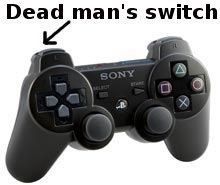
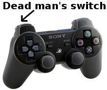

- Purpose:
- This gadget is used to enable joystick control of the robot.
-
 

- How To
- Click Start to turn on the joystick controller.
- Once the light is green, the joystick is on and ready for use.
- Pick up the joystick controller and hold down the "dead man's switch" with your left index finger. The button is located at the top left of the left hand grip (see image of your particular controller).This switch helps prevent accidental operation of the robot.
- To drive the robot around, continually hold down the dead man's switch, and use the joysticks to move the robot where you want it to go:
- the right joystick moves the robot forward, backward, left and right
- the left joystick rotates the base of the robot clockwise and counterclockwise